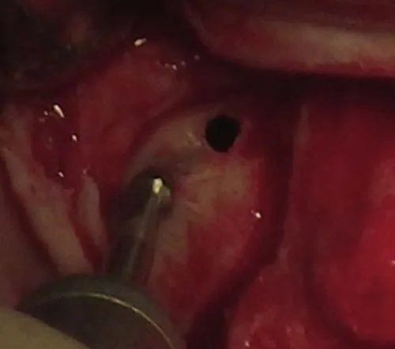
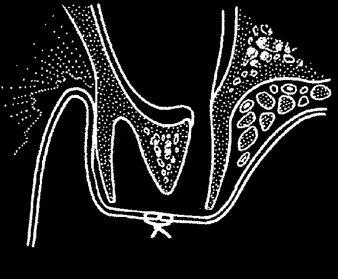

نسخه استخراجشده؛ ترجمه یا تأیید علمی انجام نشده است. وضعیت: captured
اول عدد: پارگی ممبران شایعترین عارضهی حین پیوند سینوس است و در حدود ۱۰ تا ۳۴ درصد موارد رخ میدهد. پس اتفاق نادری نیست و باید برایش پروتکل داشته باشی، نه صرفاً امید.
چرا پارگی خطرناک است؟ مادهی پیوند میتواند از راه پارگی به داخل سینوس نشت کند، به سمت اوستیوم مهاجرت کند و یا از بینی دفع شود یا اوستیوم را مسدود کند و تخلیهی طبیعی سینوس را ببندد. علاوه بر این، پارگی خطر عوارض کوتاهمدت را بالا میبرد، و در تکنیک SA-2 اگر ممبران حین کاشت ایمپلنت پاره شود، احتمال افزایش ارتفاع استخوان کمتر میشود.
ترمیم — بر اساس اندازه:
• اول ممبران از اطراف پارگی و از همهی سمتها بلند میشود تا روی خودش تا بخورد و پارگی کوچک بسته شود؛ سپس قطعهای ماتریکس کلاژن بریده میشود که محل پارگی را بپوشاند و بیش از ۵ میلیمتر از حاشیههای آن همپوشانی داشته باشد.
• اگر پارگی بزرگ باشد و با بلند کردن دورتادور بسته نشود، از ممبران کلاژنی جذبی با چرخهی جذب طولانیتر (مانند Renovix یا BioMend) برای سیل و موم کردن استفاده میشود.
پیشگیری بهتر از ترمیم است، و همهی نکات پیشگیرانهی این جراحی یک الگو دارند: ابزار روی استخوان (کورت، رتراکتور)، خط پنجره در ارتفاع درست (۱ تا ۲ میلیمتر بالای کف، نه بیش از ۴)، پرهیز از تکنیک کور وقتی حجم بلند کردن زیاد است، و شناسایی سپتا در CBCT پیش از جراحی.
فیستول دهانی-سینوسی. فیستول کوچک (کمتر از ۵ میلیمتر) معمولاً با آنتیبیوتیک سیستمیک و دهانشویهی کلرهگزیدین خودبهخود بسته میشود، ولی فیستولهای بزرگتر از ۵ میلیمتر معمولاً به مداخلهی جراحی اضافی نیاز دارند.
برشی که ۱۵ میلیمتر قدامی و خلفی فیستول امتداد یابد سودمند است. برای بستن فیستول پس از پیوند سینوس، فلپ پالاتال چرخشی توصیه میشود، چون مخاط کراتینیزهی فراوان با خونرسانی کافی دارد؛ بافت باکال نازک است و فلپ باکال عمق وستیبول را کم میکند.
و یک هشدار دربارهی تشخیص: در استفاده از مانور والسالوا (تست فوت کردن بینی) برای تأیید فیستول در حین جراحی باید احتیاط کرد.

دلیل روشنی وجود دارد که چرا آنتیبیوتیک در این جراحی جدیتر از جراحیهای دیگر است: محل گرافت یک فضای مرده با حداقل خونرسانی و بدون حفاظت سازوکارهای دفاعی سلولی میزبان است. پس از پایدار شدن لخته، دارو تا زمان رگزایی مجدد به ناحیه وارد نمیشود — یعنی پنجرهی اثرگذاری کوتاه و در همان ابتداست.
پروتکل:
• Augmentin (۸۷۵/۱۲۵ میلیگرم) مؤثرترین آنتیبیوتیک برای عفونتهای باکتریایی سینوس ماگزیلا نشان داده شده است.
• داکسیسایکلین ۱۰۰ میلیگرم، دو بار در روز، از ۱ روز پیش از جراحی تا ۵ روز پس از آن.
• پوشش آنتیبیوتیک خوراکی حدود ۵ روز پس از جراحی ادامه مییابد، چون عفونت استخوانسازی را بهشدت مختل میکند.
• بهدلیل شیوع بالای آلرژی به بتالاکتامها، فرم تزریقی سفازولین (Ancef) توصیه شده است.
• تجربهی بالینی نشان میدهد خطر عفونت وقتی کمتر است که آنتیبیوتیک هم پیش و هم پس از عمل و هم داخل گرافت به کار رود.
دستورهای بیمار — هر کدام یک منطق دارد:
• فوت نکردن بینی و پرهیز از ایجاد فشار منفی با نی یا سیگار، به مدت ۲ هفته. فشار، مستقیماً روی ممبران و لخته اثر میگذارد.
• عطسه با دهان باز، تا فشار غیرضروری به ناحیهی سینوس وارد نشود.
• کرایوتراپی: کیسهی یخ، مایعات سرد، بالا نگه داشتن سر و محدود کردن فعالیت برای ۲ تا ۳ روز — چون تورم پس از عمل میتواند خط برش را به خطر بیندازد.
• اگر نیاز به مخدر باشد، ترکیب حاوی کدئین ترجیح دارد، چون کدئین ضدسرفهی قوی است و سرفه فشار اضافی به ممبران وارد میکند و باکتری را وارد گرافت میسازد.
تشخیص رینوسینوزیت پس از عمل: علائم خفیف — سردرد، درد یا تندرنس در ناحیهی سینوس ماگزیلا، رینوره؛ علائم شدید — تب، سردرد یا علائم چشمی. درمان با آنتیبیوتیک سیستمیک، پایش نزدیک و شستوشوی بینی با سالین آغاز میشود و اگر علائم برطرف نشد، ارجاع به پزشک یا ENT.
عفونت محل گرافت (ترشح، باز شدن خط برش، طعم بد) هم ابتدا با آنتیبیوتیک سیستمیک و دهانشویهی ضدمیکروبی درمان میشود و اگر ادامه یافت، دبریدمان و درناژ همراه با سالین استریل و کلرهگزیدین.
معیارهای ارجاع فوری: سردرد شدیدی که با مسکنهای خفیف برطرف نمیشود، تب بالا یا پایدار، لتارژی، اختلال بینایی، یا تورم اوربیتال. اگر علائم چشمی یا مغزی ادامه یابد یا بیمار به درمان آنتیبیوتیکی پاسخ ندهد، ارجاع توصیه میشود.
چرا اینقدر سختگیرانه؟ چون عفونت سینوسهای پارانازال سالانه حدود ۵ تا ۱۰ درصد کل آبسههای مغزی گزارششده را تشکیل میدهد.
